웍스AI 사용자 교육
질문하기 · AI 도구 · 비용과 토큰 · 나만의 에이전트 · 안전하게 쓰기
오른쪽 화살표 키 또는 화면 오른쪽을 눌러 넘기세요
오늘의 순서
화면 구성과 메뉴
좋은 질문 쓰는 법
회의록, 번역, 슬라이드
아껴 쓰는 습관
나만의 에이전트 만들기
예약과 안전 수칙
1. 첫걸음
여러 AI 모델과 업무 도구를 한 화면에서 쓰는 우리 회사 공용 AI 공간입니다.
질문, 요약, 번역, 메일 초안을 대화로 해결합니다.
문서, 이미지, 회의 녹음을 올려 정리합니다.
이미지, 영상, 슬라이드, 문서를 만듭니다.
에이전트와 예약으로 반복 업무를 맡깁니다.
1. 첫걸음
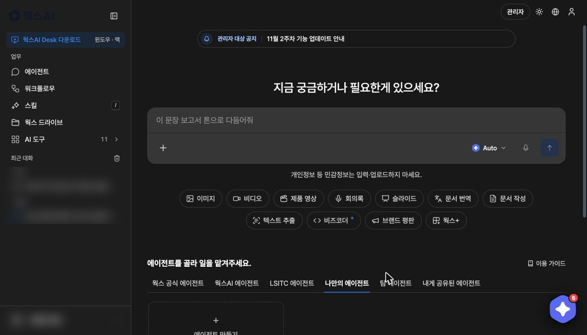
에이전트, 워크플로우, 스킬, 드라이브, AI 도구
하고 싶은 일을 문장으로 적습니다
처음에는 Auto 그대로 둡니다
이미지, 회의록, 슬라이드 등
업무별로 만들어진 AI 비서
1. 첫걸음
업무별 AI 비서를 골라 대화합니다.
정해진 순서의 업무를 자동으로 실행합니다.
슬래시(/) 명령으로 부르는 나만의 업무 설명서입니다.
파일을 보관하고 대화에 바로 첨부합니다.
이미지, 회의록 같은 전용 도구 모음입니다.
2. 질문하기
하고 싶은 일을 평소 말투로 적습니다.
처음에는 모델을 바꾸지 않아도 됩니다.
필요하면 + 버튼으로 파일을 붙입니다.
Enter 키 또는 화살표 버튼을 누릅니다.
실제로 입력해 본 예
몇 초 안에 인사말, 감사, 후속 안내가 담긴 3줄 메일 초안이 나옵니다.
2. 질문하기
누구에게, 무슨 일로 쓰는지
쓰기, 요약, 번역, 정리 중 무엇인지
메일, 표, 목록, 3줄 같은 모양
5줄 이내, 격식체처럼 구체적으로
아쉬운 질문
메일 써줘
좋은 질문
거래처 담당자에게 납품이 하루 늦어진다는 사과 메일을 격식체로 5줄 이내로 써줘
2. 질문하기
신규 거래처에 보낼 첫 인사 메일을 정중한 격식체로 5줄 이내로 써줘
바로 보낼 수 있는 초안(긴 글을 붙여넣고) 핵심 3가지와 내가 할 일만 정리해줘
핵심과 할 일 목록아래 영문 메일을 자연스러운 업무 한국어로 번역하고 어려운 표현은 설명해줘
번역문과 표현 설명신제품 출시 D-30 역순 체크리스트를 부서별로 짜줘
부서별 일정표2. 질문하기
내 컴퓨터의 파일을 올립니다.
보관한 파일을 바로 붙입니다.
저장해 둔 업무 방법을 불러옵니다.
큰 파일은 한 번에 많은 토큰을 씁니다. 필요한 쪽만 잘라서 올리세요.
메일이나 문서에 바로 붙입니다.
“더 짧게”, “표로 바꿔줘”처럼 한 줄로 고칩니다.
Markdown, HTML, JSON, PDF, Word, HWP로 저장합니다.
보내기 전에 민감정보가 없는지 확인합니다.
실습 1 | 10분
오늘 써야 할 메일이나 요약 한 가지
상황, 할 일, 형식, 분량을 한 문장으로
“더 짧게”나 “표로”로 한 번 더
내보내기로 PDF나 Word 받기
3. AI 도구
왼쪽 메뉴의 AI 도구에서 용도별 전용 화면을 엽니다.
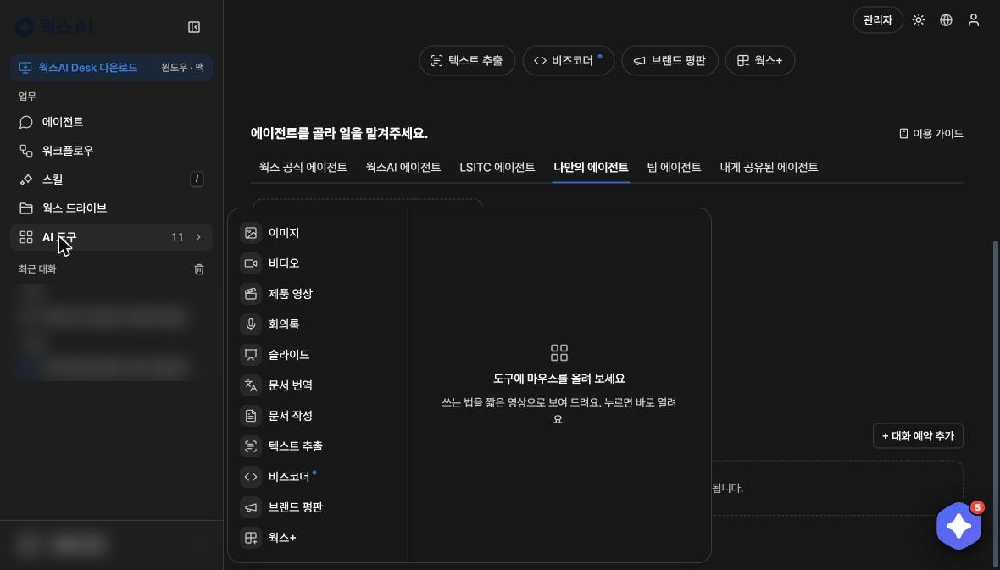
3. AI 도구
녹음 올리기 또는 바로 녹음
참석자 분리, 요약, 할 일
PDF, HWPX, 텍스트로 받기
엔진 고르고 파일 올리기
번역할 언어 고르기
번역본과 원문 비교 PDF
양식 올리기 (HWP, DOCX, PDF)
문체 고르기
단락별 자동 작성 후 저장
제목, 주제, 장 수 정하기
장별 구성안 확인
발표하거나 PDF, PPTX로
이미지 올리기 (최대 20장)
뽑을 정보 정하기
엑셀로 받기
스타일 고르기
그릴 내용, 비율, 장수
이어서 고쳐 그리기
비디오, 제품 영상, 브랜드 평판, 웍스+도 있습니다. 영상과 이미지 생성은 업무에 꼭 필요할 때만 쓰세요.
실습 2 | 15분
회의록, 문서 번역, 슬라이드 중 하나
교육용 샘플이나 민감정보 없는 자료
빠진 내용, 틀린 부분 직접 확인
4. 비용과 토큰
내 질문 한 번 한 번이 회사의 비용이 됩니다.
알고 쓰는 습관이 필요한 이유입니다.
4. 비용과 토큰
1,600자 ≈ 1,000토큰
한글 기준 대략적인 환산이며 모델에 따라 조금씩 다릅니다.
택시 요금처럼, 이동한 거리가 길수록 요금이 올라갑니다. 토큰은 AI가 읽고 쓴 글의 거리입니다.
내가 보낸 질문, 첨부한 파일, 이전 대화 내용
AI가 써 준 답변과 작업 과정
4. 비용과 토큰
고성능 모델일수록 단가가 높고, 가벼운 모델은 낮습니다.
AI가 쓰는 글은 읽는 글보다 단가가 높아, 길게 쓰게 할수록 비용이 늘어납니다.
에이전트가 도구를 여러 번 쓰면 그 횟수만큼 계산됩니다.
4. 비용과 토큰
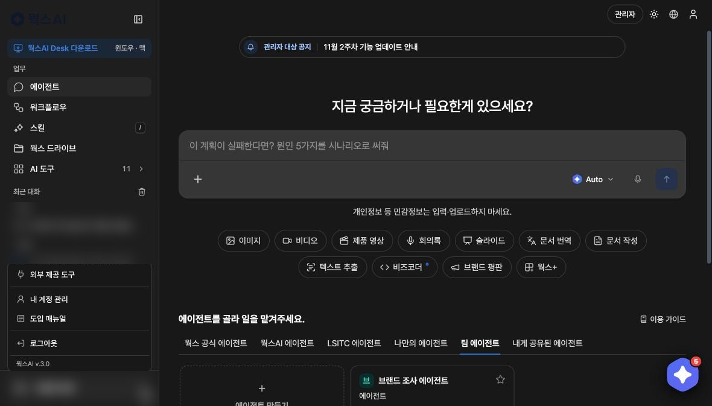
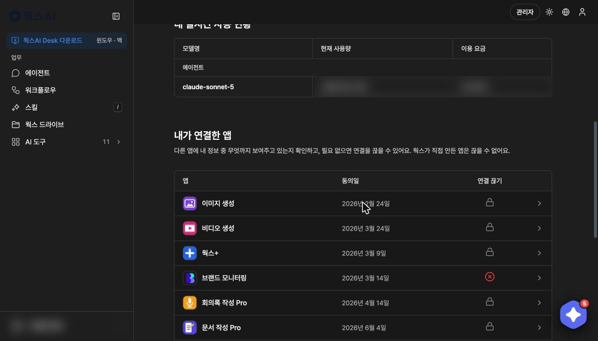
메뉴를 엽니다.
계정 화면으로 이동합니다.
모델별 사용량과 이용 요금을 봅니다.
사용 현황 표의 숫자는 개인정보 보호를 위해 가렸습니다. 실제 화면에는 모델별 토큰과 요금이 표시됩니다.
4. 비용과 토큰
지난 대화가 매번 입력에 다시 더해집니다.
파일이 클수록 한 번에 많은 토큰을 씁니다.
쉬운 일에는 단가가 높은 모델이 필요 없습니다.
작업 단계가 늘어 매번 더 많이 계산됩니다.
개념도: 대화가 길어질수록 매 질문에 다시 계산되는 양
질문 1회차 ... 10회차
4. 비용과 토큰 | 실제로 있었던 사례
약 500번
한 대화를 한 달 넘게 이어 쓴 경우
한 사용자의 비용이 수백만원까지 늘었습니다.
1,050,000토큰
한 번의 요청으로 입력된 양
큰 파일을 올린 뒤 질문했거나, 한 대화창에 내용이 쌓인 결과로 확인되었습니다.
제조사 확인 사례이며 고객사명은 밝히지 않습니다. 수치는 당시 기준입니다.
4. 비용과 토큰
지난 대화가 매번 다시 계산됩니다
파일이 클수록 비용이 커집니다
모델마다 단가가 다릅니다
다시 묻는 횟수가 줄어듭니다
도구가 많을수록 느려지고 비쌉니다
4. 비용과 토큰
기본은 Auto, 막힐 때만 한 단계 올립니다.
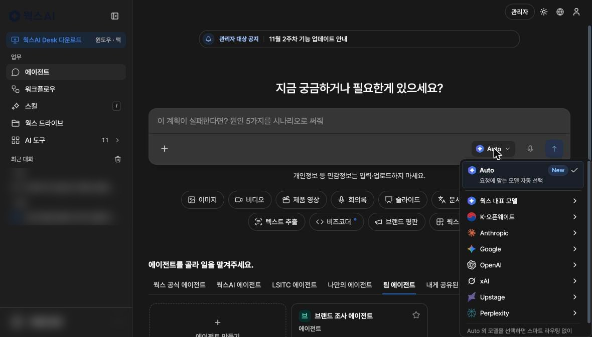
단순하고 빠른 일
인사, 맞춤법, 짧은 메일, 간단한 번역일반적인 업무 문서
보고서 초안, 긴 글 요약, 데이터 정리복잡하고 틀리면 곤란한 일
여러 문서 비교, 복잡한 분석, 코드 분석Auto를 선택하면 질문 난이도에 맞춰 모델이 자동으로 정해집니다. Auto 외 모델을 고르면 자동 선택 없이 그 모델을 씁니다.
4. 비용과 토큰
한 조직 전체가 쓸 수 있는 월 사용 금액입니다.
부서 전체와 부서원 한 명당 한도를 나눌 수 있습니다.
사용자 한 명의 월 사용 금액입니다.
한도에 도달하면 사용이 막힙니다. 한 번의 요청이 남은 한도를 넘길 수 있으니 습관으로 아껴 쓰고, 부족하면 관리자에게 문의하세요.
복사해서 그대로 쓰세요.
실습 3 | 10분
내 계정 관리의 실시간 사용 현황
형식과 분량이 들어간 질문으로
긴 대화를 요약해 새 대화로
5. 에이전트
일반 대화
“너는 거래처 메일 전문가야. 항상 격식체로 쓰고 수신자 이름을 넣어줘.”
“납품 일정 안내 메일 써줘”
매번 처음부터 설명해야 합니다.
에이전트
“납품 일정 안내 메일 써줘”
역할을 한 번만 정해 두면 바로 일만 시키면 됩니다.
5. 에이전트
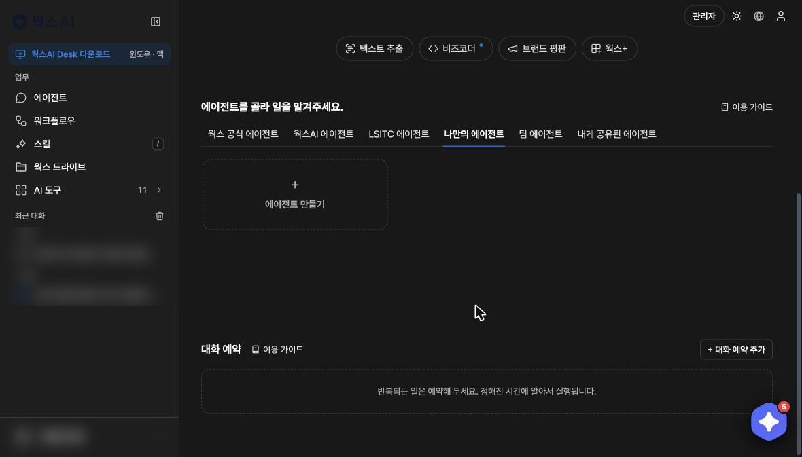
공식, 웍스AI, 회사, 나만의, 팀, 내게 공유된 에이전트
나만의 에이전트는 여기서 시작합니다
정해진 시간에 알아서 실행합니다
5. 에이전트
나만 사용
만들면 바로 사용
같은 부서원
만들면 즉시 부서에 노출
워크스페이스 구성원
관리자가 노출 대기 후 검수
회사 전체
관리자가 노출 대기 후 검수
내가 만든 에이전트를 회사 공식 에이전트로 올리려면 등록 신청을 하고 관리자 승인을 받습니다.
5. 에이전트 | 나만의 에이전트
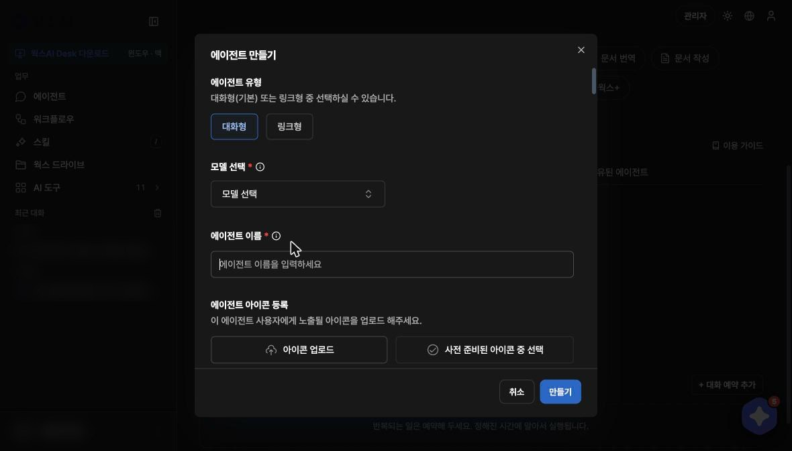
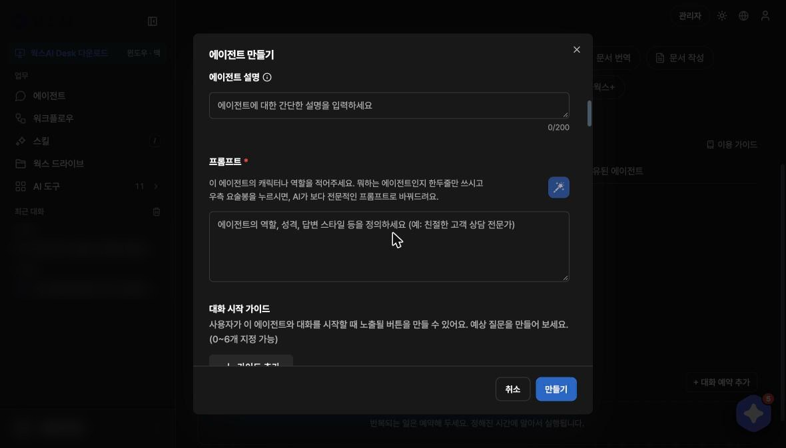
가벼운 업무는 가벼운 모델로 충분합니다.
이름을 적습니다.
한두 줄만 적고 요술봉을 누릅니다.
생성된 지시문을 다듬습니다.
5. 에이전트 | 나만의 에이전트
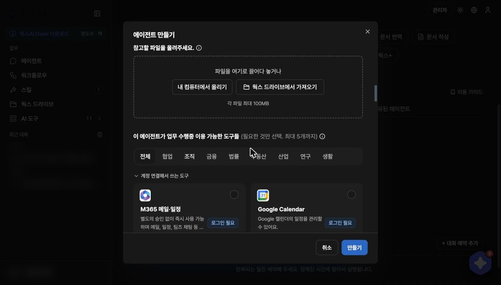
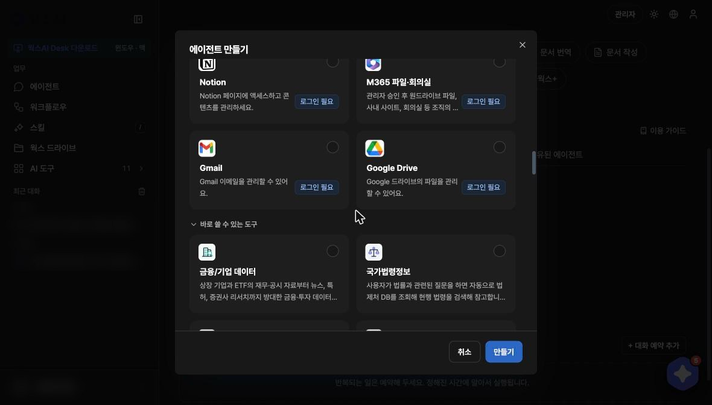
꼭 필요한 파일만, 각 100MB까지
필요한 도구만 최대 5개
로그인이 필요한 도구는 처음 한 번 연결
완료하면 목록에 카드가 생깁니다
삭제한 에이전트는 복구할 수 없으니 지시문은 따로 저장해 두세요.
5. 에이전트 | 나만의 에이전트
내가 적은 한 줄
거래처와 주고받는 비즈니스 메일을 격식체로 작성해주는 에이전트
AI가 만든 지시문
역할, 제약 조건, 출력 형식을 갖춘 전문가 수준의 지시문으로 바뀝니다.
최대 5개. 처음 쓸 때 한 번 로그인하고, 만료되면 도구 카드를 눌러 다시 로그인합니다.
파일이 많을수록 매번 검색해 성능이 떨어집니다. 적게 올릴수록 정확하고 저렴합니다.
지시문이 길면 매번 함께 계산됩니다. 필요한 내용만 남기세요.
5. 에이전트
팀 에이전트 관리 열기
부서 선택
팀 에이전트 추가
만들기: 같은 부서원에게 즉시 노출
부서가 등록돼 있고 부서가 할당돼야 만들 수 있습니다. 부서원 누구나 수정할 수 있어 중요한 변경은 합의 후 진행하세요.
사용자: 등록 신청
관리자: 노출 대기중 확인
관리자: 검토와 수정
관리자: 메인 노출 토글 켜기
공유되는 것: 이름, 아이콘, 설명, 지시문, 도구, 참고 파일(답변에만 활용). 대화 내역과 로그인 정보는 공유되지 않습니다.
5. 에이전트
공식 자산으로 쓰기에 알맞고 사용자에게 명확한가
민감정보나 내부 규정에 어긋나는 내용이 없는가
공유해도 되는 문서인가, 꼭 필요한 파일만 있는가
필요한 도구만 연결했는가, 회사 정책에 맞는가
대표 질문 몇 가지로 답변이 정확한지 확인했는가
실습 4 | 20분
거래처 메일, 주간보고서, 회의록 정리
한 줄 설명 + 요술봉
대표 질문 3개로 답변 확인
점검 목록으로 확인
6. 자동화와 안전
정해진 시간에 알아서 에이전트와 대화하고, 결과는 대화로 남습니다.
홈의 대화 예약 영역에서 추가합니다
추가하면 예약 목록에 나타납니다
누구와 대화할지 선택
날짜, 시간, 반복 주기 (서울 시간)
예약 시간에 시킬 일
꼭 필요한 것만 예약
6. 자동화와 안전
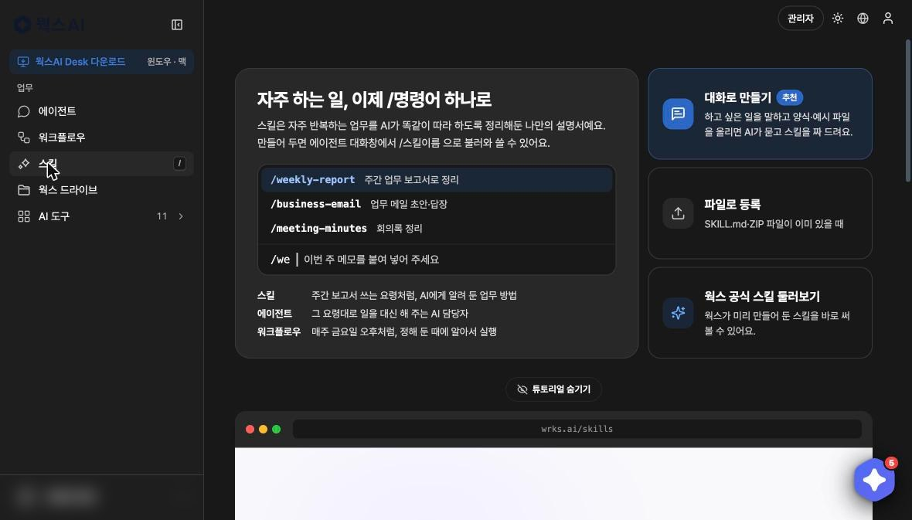
자주 하는 일을 /명령어 하나로 부릅니다. 대화로 만들기, 파일로 등록, 웍스 공식 스킬 중에서 시작합니다.
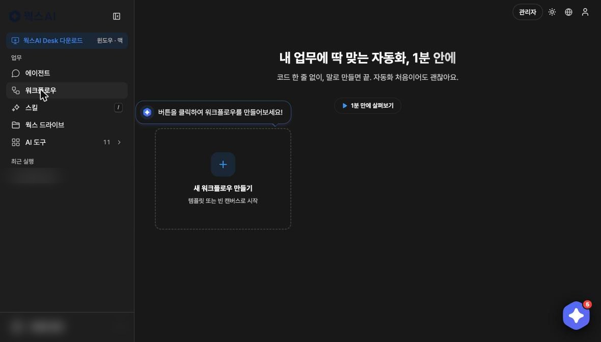
매주 금요일 오후처럼 정해 둔 때에 알아서 실행됩니다. 코드 없이 말로 만듭니다.
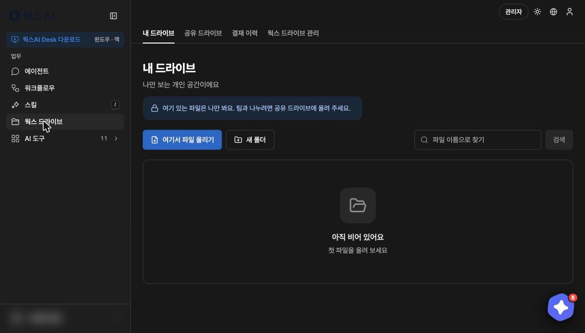
내 드라이브는 나만 봅니다. 팀과 나누려면 공유 드라이브에 올립니다.
6. 자동화와 안전
주민번호, 비밀번호, 카드번호
올리기 전에 한 번 더
사람이 최종 확인합니다
많은 사람에게 영향을 줍니다
되돌리기 어렵습니다
숫자와 날짜는 원자료와, 법령과 규정은 원문과 대조하고, 외부 문서는 사람이 마지막으로 읽고 보냅니다.
마무리
형식, 분량, 예시를 넣어 다시 요청하거나 새 대화를 시작하세요.
도구 카드를 눌러 다시 로그인하면 됩니다.
나만의 에이전트는 나만 씁니다. 팀 에이전트나 공식 등록을 이용하세요.
관리자에게 한도 조정을 문의하세요.
복구할 수 없습니다. 지시문은 따로 저장해 두세요.
마무리
좋은 질문은 상황, 할 일, 형식, 분량을 담는다
주제가 바뀌면 새 대화, 파일은 필요한 부분만
쉬운 일은 Auto, 막힐 때만 고성능 모델
반복되는 일은 에이전트로, 공유 전에는 점검
민감정보는 넣지 않고, 결과는 직접 확인한다
문의: 웍스AI 담당자 [부서명과 연락처 입력]